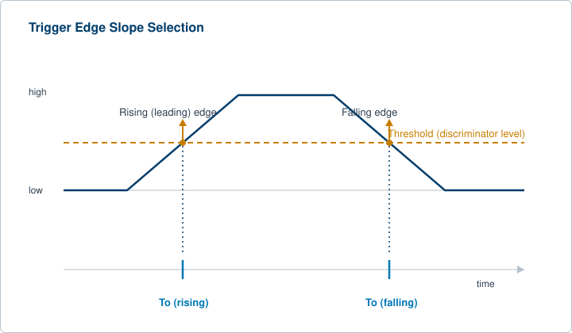
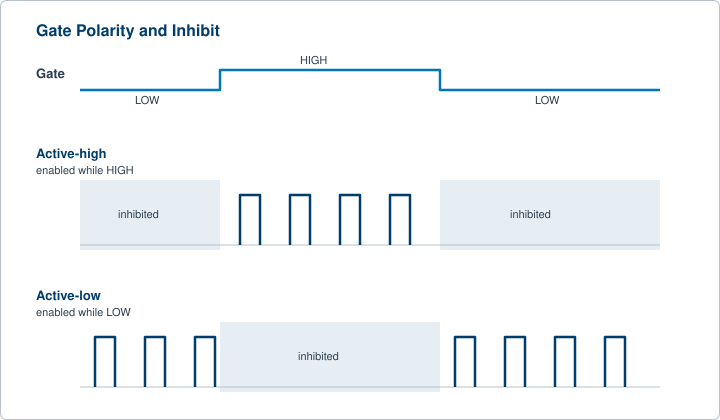
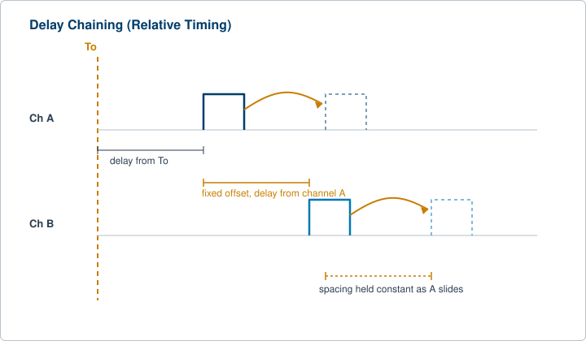
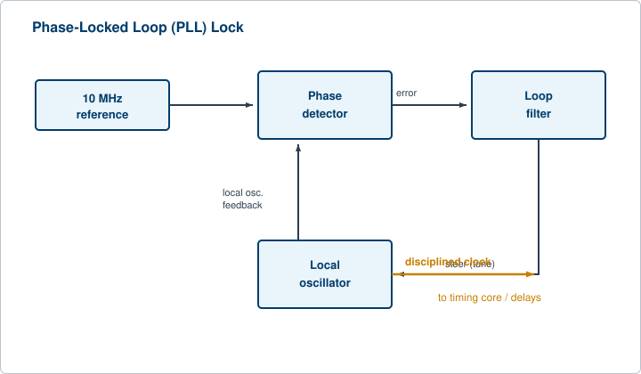

Chapter 1 introduced the trigger, the delay, and the To reference as the basic vocabulary of timing. This chapter pushes past the definitions into the working details: how a trigger is qualified and sequenced, how a gate enables or inhibits outputs without touching the timing program, how delays reference each other so a whole pattern can be moved as a unit, and how the clock underneath every delay sets the ceiling on what the instrument can do. Three verbs organize the work an engineer actually performs on the bench: gating, delaying, and clocking. Each one is a separate lever, and each one rewards a closer look.
Chapter 1 established that a timing cycle starts on a trigger, internal or external, and that an external trigger is qualified by a threshold (the discriminator level) and a slope (leading or falling edge). That is the entry point. The rest of triggering is about control: deciding which triggers count, in what order, and how often.
Internal versus external, revisited. An internal trigger comes from the instrument's own rate generator, a programmable oscillator that fires at a set repetition rate and makes the instrument a free-running source. An external trigger comes from outside, and the instrument behaves as a precise delay timer that waits for the world to tell it when to act. Many instruments add a line trigger that fires in step with the AC mains, which helps when timing must avoid mains-frequency interference. The Model 575 and 577 expose both internal and external triggering on the front panel, so the same instrument can lead with its own rate or follow an outside event without rewiring.
Threshold and slope as a noise defense. Setting the threshold is not housekeeping. It is the line that separates a real trigger from electrical noise riding on the input. Set it too low and noise crosses it; set it too high and a legitimate but slow edge never arrives. Slope selection decides whether the cycle starts on the rising (leading) edge or the falling edge of the trigger. On a clean, fast edge the choice barely matters. On a slow edge crossing a noisy threshold, the crossing time wanders, and that wander shows up later as trigger jitter. The fastest, cleanest trigger edge gives the lowest jitter, a point we return to at the end of this chapter.

Arm and trigger sequences. Demanding work separates arming from triggering. An arm event prepares the instrument to accept the next trigger, and only then does a trigger actually launch the cycle. This two-step sequence lets an operator gate a whole class of triggers in or out, or require a specific order of events before any output appears. A common pattern is to arm on a slow setup signal and trigger on a fast event, so the instrument ignores everything until the experiment is genuinely ready.
Trigger holdoff. After a trigger fires, holdoff blocks new triggers for a set time. It is the first defense against accidental double-triggering. A noisy or bouncing source can launch the cycle more than once on a single real event, and a fast or irregular trigger train can pack pulses closer together than the instrument or the device under test can tolerate. Holdoff enforces a minimum spacing on whatever arrives at the trigger input, regardless of how ragged that input is.
Gated triggering. Triggering can be conditioned on a separate gate signal. When the gate is in its active state, the instrument accepts triggers normally. When the gate is inactive, triggers are ignored. This is how an operator enables timing only during a window of interest, such as the active phase of an experiment, while leaving the trigger source running the whole time.
Gating is the act of enabling or inhibiting outputs without changing the timing program. A gate is a control input, not a trigger. The trigger decides when a cycle starts. The gate decides whether the programmed pulses are allowed to reach the output at all. The two work together, and confusing them is a common early mistake.
Active-high versus active-low. A gate input is configured to treat either the high state or the low state as the active, enabling condition. Active-high means a logic high enables output. Active-low means a logic low enables output. Getting this polarity right is essential, because a gate wired with the wrong sense does the exact opposite of what the operator intends. The output goes quiet when it should run and runs when it should be quiet, which can be a safety problem as much as a timing one.

Output inhibit versus pulse inhibit. There are two common ways a gate disables a channel, and the difference shows up at the edges. With output inhibit, the gate cuts the output immediately. If a pulse is in progress when the gate goes inactive, that pulse is truncated, leaving a runt. With pulse inhibit, the gate prevents the channel from being triggered, but any pulse already underway finishes cleanly before output stops. Output inhibit favors a fast, hard cutoff. Pulse inhibit favors clean, complete pulses. Choosing between them is a deliberate decision, not a default to accept blindly.
Scope of gating. A gate can act on a single channel, on a selected group of channels, or on all outputs at once. Gating all channels from one input is the fastest way to silence the whole instrument during a fault or a setup change. On a multi-channel instrument such as the Model 588, the ability to gate per channel or across the whole unit lets one input serve as a global safety inhibit while other gates frame individual channels.
Hardware gates versus software gates. A hardware gate is a physical input that responds in real time at the speed of the electronics. A software gate is a command sent over a control bus that enables or disables outputs. Hardware gating is fast and deterministic. Software gating is flexible and remotely controllable, but it carries the latency of the command path and is not suitable for tight, time-critical inhibits. When timing matters down to the pulse, use the hardware input. When the goal is a configuration change or a remote enable, the software path is fine.
Burst gating. In burst work, a gate can frame a finite group of pulses. The instrument emits a defined number of pulses while the gate is active, then stops. This is how operators produce controlled bursts rather than a continuous train, and it pairs naturally with the burst output modes covered in the multi-channel chapter.
Delay is the heart of a delay generator. Chapter 1 defined the programmed delay as the interval from the trigger to the output edge, measured from To, and named the fixed insertion delay between the external trigger and the first timing period. Here we go deeper into how delay is referenced and how its quality is specified.
The To reference. Most multi-channel instruments define a master start-of-cycle marker, commonly called To. To marks the instant the timing cycle begins, set by the trigger, and every channel delay is expressed as a time after To. Because the trigger path and the output electronics take real time to respond, there is a fixed insertion delay between the external trigger and To. That insertion delay is an inherent property of the hardware. Treat it as a known offset, not as adjustable timing. For the actual insertion delay of a given model, see the current datasheet.
Resolution and accuracy are not the same thing. Each channel has a delay the operator sets in time units, and two specifications describe how good that delay is. Resolution is the smallest step by which the delay can be changed. Accuracy is how close the actual edge lands to the programmed value. A high-resolution instrument can still be inaccurate if its time base drifts or its calibration is off. The Model 577 carries 250 ps resolution with an accuracy specification of 1 ns plus 0.0001 times the setpoint, which shows the pattern directly: a fine step size, plus an accuracy term with a fixed part and a part that scales with the interval. The Model 745T family reaches into the picosecond range with a 1 ps option. Always read resolution and accuracy as a pair.
Delay relative to a trigger versus relative to another channel. A channel delay can reference To, or it can reference another channel. Referencing another channel is called delay chaining or relative timing, and it is the most useful trick in the chapter. Suppose channel B is defined as channel A plus a fixed offset. Now sliding A automatically carries B along, and the spacing between them stays locked. The operator moves a whole feature in time without disturbing its internal structure. This is also how some instruments produce a delay that places one channel before another, since a channel can be positioned ahead of its reference channel even though no channel can fire before To itself. Delay chaining is the natural tool for holding a pulse width or an inter-pulse spacing constant while the pattern as a whole is moved.

Underneath every delay and every rate sits a clock. The stability of that clock sets a hard ceiling on how good the timing can ever be. No amount of fine resolution rescues a drifting time base.
The internal oscillator. The instrument carries its own time base, a crystal oscillator that defines the unit of time for all delays and rates. A standard crystal is adequate for routine work. For demanding timing, where a small frequency error accumulates into a real timing error over a long interval, the crystal becomes the limiting factor and an upgrade pays off.
External clock input and the 10 MHz reference. The instrument can be told to run on an outside clock instead of its own. Across the test and measurement world, 10 MHz is the common reference frequency. Instruments expose a 10 MHz reference input and often a 10 MHz reference output. Feeding in a cleaner or more stable reference improves every timing number the instrument produces, because all delays are counted against that clock. BNC timing instruments such as the Model 577 and the Model 588 accept an external 10 MHz reference, which is the standard way to make several instruments agree on the meaning of one second.
Phase-locked loops. A phase-locked loop, or PLL, is the circuit that disciplines a local oscillator to an external reference. The PLL compares the phase of the local oscillator against the reference and steers the local oscillator until the two track. This is how an instrument keeps both a clean internal oscillator for short-term smoothness and the long-term truth of an external standard at the same time.

Upgraded time bases, and when each matters. Three references appear in precision work, each with a different strength. An oven-controlled crystal oscillator (OCXO) holds a crystal at a constant temperature, giving low phase noise and good short-term stability. A rubidium reference uses an atomic transition for excellent long-term stability, though it can be noisier in the short term than a good OCXO. A GPS-disciplined oscillator steers a local oscillator, often an OCXO or rubidium, to satellite time, giving traceable long-term accuracy. The choice follows the job. Short averaging and low close-in noise point to an OCXO. Day-over-day agreement and traceability point to rubidium or GPS. A common design pattern combines a quiet OCXO for short-term cleanliness with a rubidium or GPS source for long-term truth, taking the best of both.
Syncing multiple instruments: master and slave. When several instruments must share one notion of time, one instrument or one reference acts as master and distributes a clock, and the others slave to it. A single 10 MHz reference is fanned out to all units, often through passive splitters, so that every instrument counts the same clock and their outputs hold a fixed phase relationship. This is the foundation of multi-instrument synchronization, and it is why the reference input and output on instruments like the 577 and 588 matter as much as any front-panel timing control. In a rack of channel-hungry work, a 24-channel Model 588B and a femtosecond-class Model 745T can be locked to the same reference and trusted to keep step.
No edge lands at exactly the same time twice. Jitter is the cycle-to-cycle variation in when an edge actually appears, and it is the quantity that separates a precision instrument from an ordinary one. Because jitter is set largely by the time base and the trigger stage, it belongs here with clocking.
RMS versus peak-to-peak. Jitter is reported two ways. RMS jitter is the standard deviation of the timing error, a stable statistic that converges as more samples are taken. Peak-to-peak jitter is the spread between the earliest and latest edges seen, and it keeps growing with sample size because the distribution has long tails. When comparing two instruments, compare RMS to RMS, and always note the sample size behind any peak-to-peak number. The Model 525 specifies less than 50 ps of internal jitter, and the Model 588B reaches below 5 ps, figures that are only meaningful because they state which jitter they mean.
Phase noise. Phase noise is the frequency-domain view of the same imperfection. It describes how the oscillator's energy spreads into frequencies near the carrier, and integrating it over a band converts back to a time figure. A quiet oscillator has low phase noise close to the carrier. This is the language a datasheet uses to describe a time base before you ever see a jitter number in picoseconds.
Why low jitter matters. In pump-probe experiments, time-resolved imaging, ranging, and any measurement that averages many shots, jitter blurs the result. Two events that should land on top of each other instead smear across a window, and fine timing detail is lost. Low jitter is what lets an instrument resolve closely spaced events, and it is the direct payoff of a clean clock and a fast trigger edge. The interaction of timing across many channels and many cycles, including what happens when programmed events collide, is the subject of a later chapter.
Check your understanding. Five quick questions on this chapter.